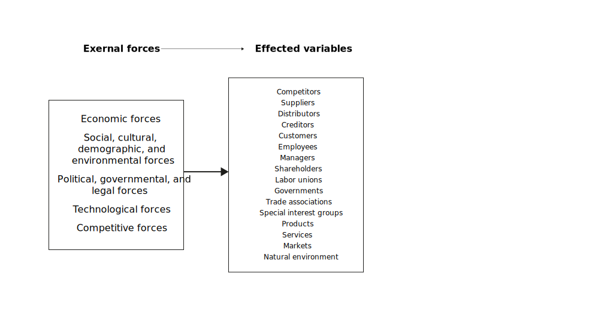
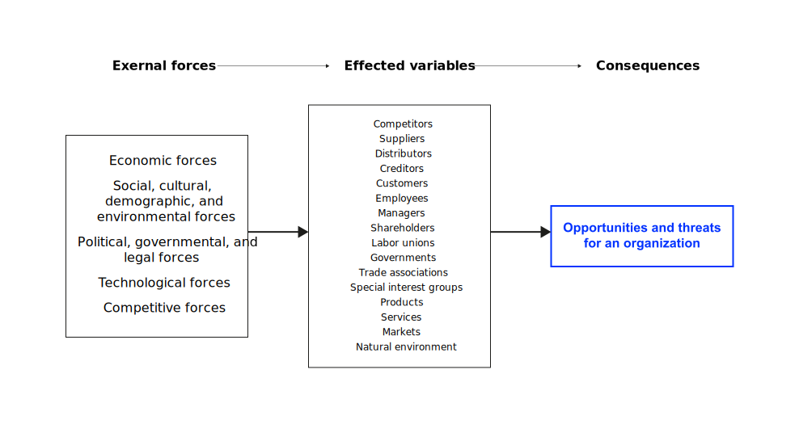

Environment
What external forces need to be considered?
Neu-Ulm University of Applied Sciences
September 22, 2023
Learning outcomes
After this session, you should have a solid understanding of
- the nature and purpose of an external audit in formulating strategies;
- major external forces that impact organizations;
- Porter’s Five-Forces Model and its relevance in formulating strategies;
- the impact of climate change on firms and strategies to cope with its effect;
- Megatrends, their identification and impact on strategic management;
- as well as the development and use of an External Factor Evaluation (EFE) matrix.
Reflection
Form small groups of 3 to 4 students, discuss your findings from reading Hallegatte (2009), and create a summary of the key findings concerning the importance of climate change for contemporary firms, uncertainties, robust decision-making, and economic evaluation and reflect their implications for strategic management on a few slides (20 minutes).
Be prepared to present your findings in a five-minute presentation.
External audit
Overview
Scanning the environment to identify key variables so that strategies can be formulated to take advantage of the opportunities and reduce the impacts of the threats.
Key external forces
External forces can be divided into five broad categories:
Economic; social, cultural, demographic, and environmental; political, governmental, and legal; technological; and competitive forces.
Exercise
Form small groups and identify legal and ethical ways to obtain competitive intelligence.
Visualization


Porter’s Five-Forces Model
Overview
The essence of strategy formulation is coping with competition.
A framework for competitive analysis of a specific industry based on five basic forces that determine the ultimate profit potential of that industry.
Visualization


Tactics
Tactics such as price competition, product introductions, advertising battles, etc. are often used by rivals jockeying for position.
Megatrends
Overview
Long-term, global, and transformative trends that bring about fundamental changes and transformations in various domains and at multiple levels.
Examples
The Zukunftsinstitut has identified 12 megatrends:
Gender shift, health, globalisation, connectivity, individualisation, mobility, security, new work, neo-ecology, knowledge culture, silver society, urbanisation.
EFE matrix
Purpose
An External Factor Evaluation (EFE) matrix allows strategists to summarize and evaluate economic, social, cultural, demographic, environmental, political, governmental, legal, technological, and competitive information.
The EFE matrix shows how the organization responds to existing opportunities and threats in its industries. Or, in other words, how the firm’s existing strategies effectively take advantage of existing opportunities and minimize the potential adverse effects of external threats.
Development
- List the key external factors (grouped by opportunities and threats)
- Assign weighing to the factors (0-100%)
- Rate the effectiveness of current strategies from 1-4
- Multiply weight * rating
- Sum weighted scores
A total weighted score of 4.0 indicates that the organization is responding in an outstanding way to existing threats and opportunities in the industry.
Example
EFE matrix for a Local 10-theater cinema complex
| Key External Factors | Weight | Rating | Score |
|---|---|---|---|
| Opportunities | |||
| 1. Two new neighborhoods developing within 3 miles | 0.09 | 1 | 0.09 |
| 2. TDB University is expanding 6% annually | 0.08 | 4 | 0.32 |
| 3. Major competitor across town recently closed | 0.08 | 3 | 0.24 |
| 4. Demand for going to cinemas growing 10% | 0.07 | 2 | 0.14 |
| 5. Disposable income among citizens up 5% in prior year | 0.06 | 3 | 0.15 |
| 6. Rowan County is growing 8% annually in population | 0.05 | 3 | 0.15 |
| 7. Unemployment rate in county declined to 3.1% | 0.03 | 2 | 0.06 |
| 8. Unemployment rate in county declined to 3.1% | 0.03 | 2 | 0.06 |
| Threats | |||
| 9. Trend toward healthy eating eroding concession sales | 0.12 | 4 | 0.48 |
| 10. Demand for online movies and DVDs growing 10% | 0.06 | 2 | 0.12 |
| 11. Commercial property adjacent to cinemas for sale | 0.06 | 3 | 0.18 |
| 12. TDB University installing an on-campus movie theater | 0.04 | 3 | 0.12 |
| 13. County and city property taxes increasing 25% | 0.08 | 2 | 0.6 |
| 14. Local religious groups object to R-rated movies | 0.04 | 3 | 0.12 |
| 15. Movies rented at local Red Box’s up 12% | 0.08 | 2 | 0.16 |
| 16. Movies rented last quarter from Time Warner up 15% | 0.06 | 1 | 0.06 |
| Total | 1.00 | 2.58 |
Exercise
Form small groups and develop an EFE matrix for the HNU.
Review and consolidation
The following questions are designed to review and consolidate what you have learned and are a good starting point for preparing for the exam.
- Describe the nature and purpose of an external assessment in formulating strategies.
- How can robustness in strategic decision-making be increased?
- How can organizations assess the cost-effectiveness of their strategies and make informed decisions about resource allocation in light of the many uncertainties of our complex world?
- What is Porter’s Five-Forces Model and what is its relevance in formulating strategies?
- What are (legal) key sources of information for identifying opportunities and threats?
- Why is [a megatrend] considered as a megatrend? Justify your answer.
- Why must megatrends be considered in the process of strategy formulation and evaluation?
- Explain the significance of an EFE matrix total weighted score of 3.67 versus a 1.59.
- How have external factors resulted in a major overhaul to the traditional retail industry as we once knew it?
- Describe how political elections can be an important external factor for companies to consider. Select an industry and reveal some key political factors impacting firms.
- Explain how Facebook, Twitter, and Instagram can represent a major threat or opportunity for a company in different industries.
- Identify and explain a recent economic, social, political, or technological trend that significantly affects the HNU.
- Discuss the following statement: Major opportunities and threats usually result from an interaction among key environmental trends rather than from a single external event or factor.
- Do you agree with Porter’s view that competitive positioning within an industry is a key determinant of competitive advantage(s)?
- Why do anual reports often state external risk information in really vague terms; why should strategists avoid including such vagueness in external assessments (e.g., in developing an EFE Matrix)?
Homework
Read Peteraf (1993) and make notes on following questions:
- What is the Resource-Based View (RBV) of the firm, and how does it differ from other perspectives in strategic management?
- What are the key elements of a firm’s resources, as discussed in the paper? Can you provide examples?
- Explain the concept of resource heterogeneity. Why is it considered a crucial factor in determining competitive advantage according to the RBV?
- What is the significance of resource immobility in the RBV? How does it relate to the sustainability of competitive advantage?
- Define dynamic capabilities and their role in the RBV. How do dynamic capabilities enable firms to adapt and innovate over time?
- What is the relationship between a firm’s resources, competitive advantage, and value creation for customers?
- How does the RBV contribute to our understanding of why some firms consistently outperform others in the marketplace?
- What implications does the paper have for strategic management? How can businesses leverage the insights from the RBV to enhance their competitiveness?
- In your opinion, what are the most significant takeaways from the paper, and how might they be applied in a practical business context?
Q&A
Literature
Footnotes
The external strategic management audit is sometimes also called environmental scanning or industry analysis.